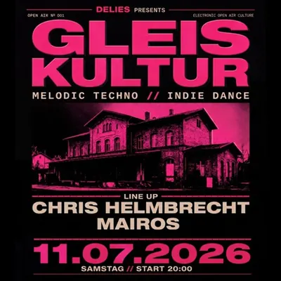
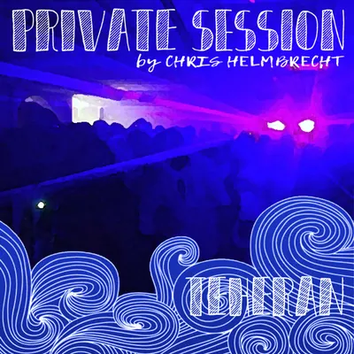
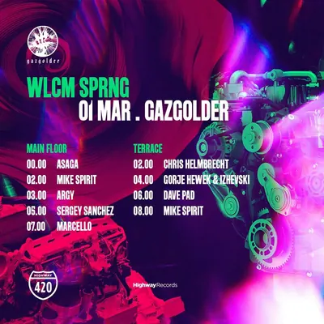
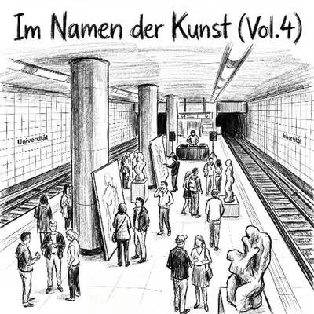

-
01
Love Room / London
20 March 2026 · London · 2:19:56
Live recording · closing set
I played the big room last and closed the night. It starts energetic and slowly turns trippy. A bit housey in parts. Keep in mind where it was played: London, a kinky party, a beautiful crowd.
Indie dance · Melodic techno · House
-

02
Gleis Kultur / Friedland
11 July 2026 · Friedland · 2:07:46
Live recording · festival
Open air at Gleis Kultur. Great audience, great stage, great sound system. The DJ after me needed a different mixer, so the music had to stop for a minute. That let me say a proper goodbye, with Perel’s version of Eisbär.
Melodic techno · Indie dance · House
-

03
Private Session / Teheran
July 2018 · Tehran, Iran · 3:45:18
Live recording · private party
A private party in Tehran. Uncharted DJ territory. Not many people get to play there. The audience was awesome. I hope I get invited back.
Tech house · Deep tech house · Deep house
-

04
WLCM SPRNG @ Gazgolder
1 March 2019 · Moscow · 2:11:52
Live recording · warm-up
A warm-up session on the terrace at Gazgolder. It is always nice to play your own favourite venue. Lots of friends, a good vibe.
Deep house · Deep tech · Tech house
-
 05
PLAY TF-5
September 2026 · Munich · 2:02:08
05
PLAY TF-5
September 2026 · Munich · 2:02:08
PLAY session
PLAY is where I try out the newest tracks in a live set. This one was recorded during Oktoberfest, just back from Tenerife. TF-5 is my favourite highway on the island. Full of energy, groovy in parts, and a little underground at the very end.
Techno · Melodic techno · Deep house
-
 06
LUMA @ Loden Frey Park
Summer 2026 · Munich · 2:14:24
06
LUMA @ Loden Frey Park
Summer 2026 · Munich · 2:14:24
Live recording · open air
An open air on a small river next to the Englischer Garten. Several DJs played that day. I finished with two hours. We had a curfew. Otherwise this would have gone until sunrise.
Indie dance · Melodic techno · Afro house
-

07
Im Namen der Kunst (Vol. 4)
July 2026 · Munich, U-Bahn Universität · 1:45:44
Live recording · exhibition opening
The opening of Corinna Rosa Falkenberg’s exhibition in the Universität subway station. Not on the platform like on the cover, but in the entrance one floor up. You don’t get to play a subway station legally every day.
Indie dance · Melodic techno · House
-
 08
PLAY the Eclipse
12 August 2026 · Munich · 1:31:38
08
PLAY the Eclipse
12 August 2026 · Munich · 1:31:38
PLAY session · listening set
Recorded on the evening of the partial eclipse over Munich. Not a club set. More of a listening session. It is a live recording, so if you listen carefully you will catch a few mistakes.
Deep house · Tech house · Afro house